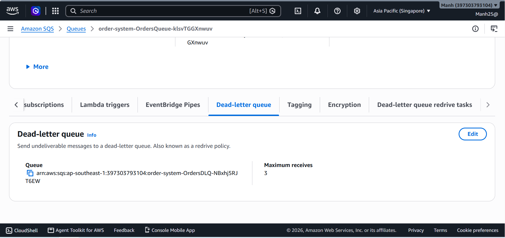
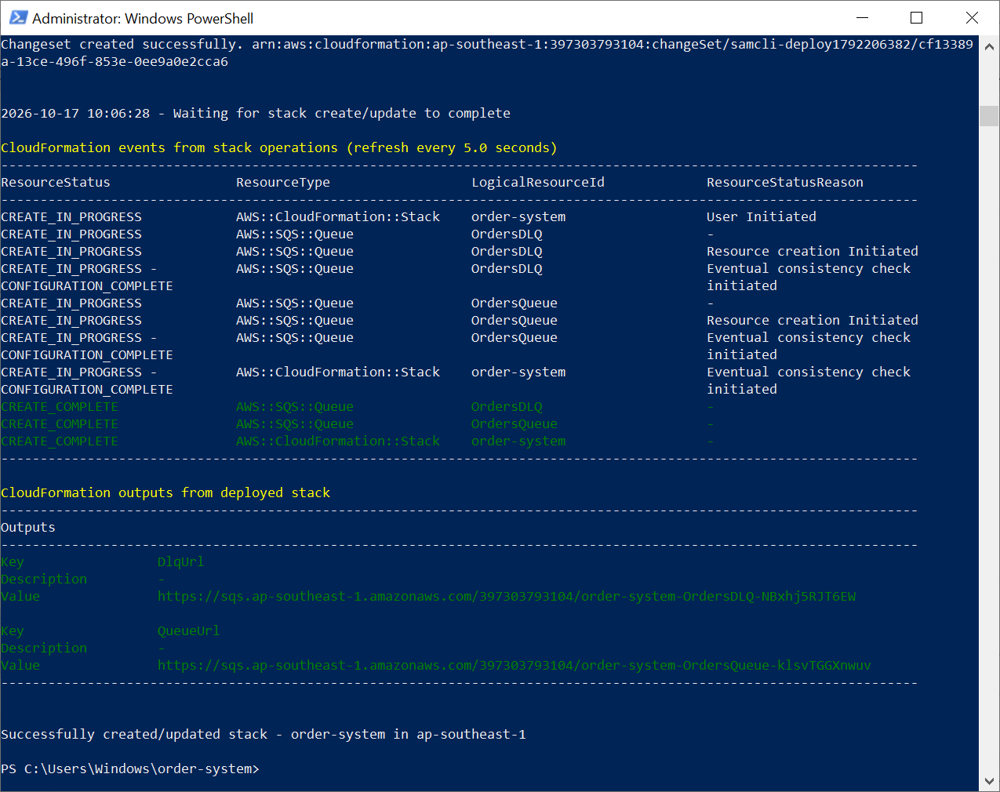
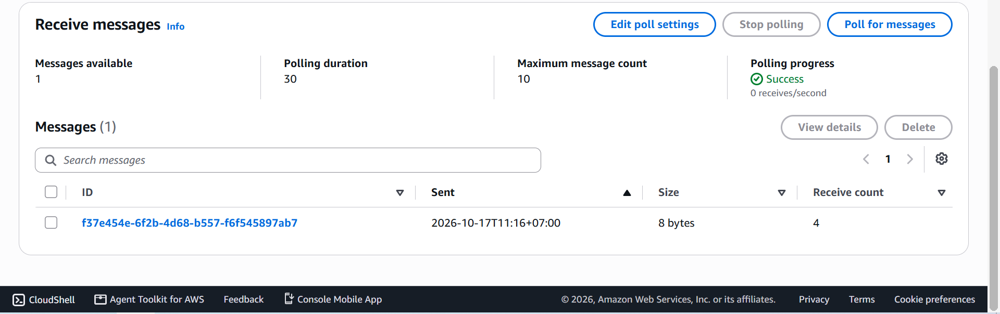

Tạo hàng đợi chính nhận đơn hàng và một hàng đợi lỗi (Dead-Letter Queue, DLQ) để giữ lại các tin nhắn xử lý thất bại, thay vì để chúng bị mất.
Ba khái niệm cần nhớ:
Trong thư mục order-system, tạo file template.yaml:
AWSTemplateFormatVersion: '2010-09-09'
Transform: AWS::Serverless-2016-10-31
Description: Order workshop - SQS va DLQ
Resources:
OrdersDLQ:
Type: AWS::SQS::Queue
Properties:
MessageRetentionPeriod: 1209600 # giu tin nhan loi 14 ngay
OrdersQueue:
Type: AWS::SQS::Queue
Properties:
VisibilityTimeout: 60
RedrivePolicy:
deadLetterTargetArn: !GetAtt OrdersDLQ.Arn
maxReceiveCount: 3
Outputs:
QueueUrl:
Value: !Ref OrdersQueue
DlqUrl:
Value: !Ref OrdersDLQ
sam build
sam deploy --guided
Trả lời các câu hỏi như sau:
| Câu hỏi | Trả lời |
|---|---|
| Stack Name | order-system |
| AWS Region | ap-southeast-1 |
| Confirm changes before deploy | N |
| Allow SAM CLI IAM role creation | Y |
| Disable rollback | N |
| Save arguments to samconfig.toml | Y |
Khi hoàn tất, SAM in ra QueueUrl và DlqUrl.

order-system-.
Lấy địa chỉ hai hàng đợi vào biến:
$q = aws cloudformation describe-stacks --stack-name order-system --query "Stacks[0].Outputs[?OutputKey=='QueueUrl'].OutputValue" --output text
$dlq = aws cloudformation describe-stacks --stack-name order-system --query "Stacks[0].Outputs[?OutputKey=='DlqUrl'].OutputValue" --output text
Gửi một tin nhắn thử:
aws sqs send-message --queue-url $q --message-body "test-dlq"
Nhận tin nhắn nhiều lần mà không xóa (tham số --visibility-timeout 0 làm tin nhắn hiện lại ngay):
1..4 | ForEach-Object {
aws sqs receive-message --queue-url $q --visibility-timeout 0 --wait-time-seconds 2
Start-Sleep -Seconds 1
}
Ba lần đầu trả về tin nhắn, lần thứ tư không còn gì. Đợi khoảng một phút rồi kiểm tra DLQ:
aws sqs get-queue-attributes --queue-url $dlq --attribute-names ApproximateNumberOfMessages
Hoặc vào Console → hàng đợi DLQ → Send and receive messages → Poll for messages.

Các số liệu của SQS là xấp xỉ và có thể trễ vài chục giây.
maxReceiveCount = 3.